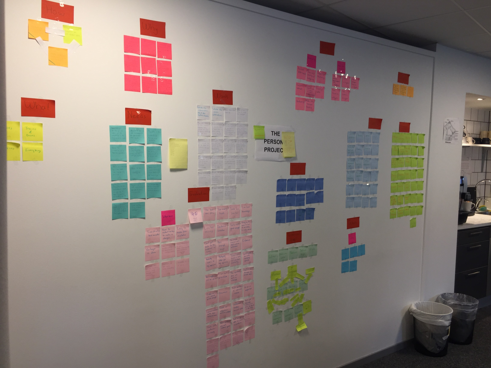

This project was a collaboration with the Chalmers University of Technology. The project was requested by a
company, that henceforth will be referred to as the Company, due to confidentially. The Company is manufacturing
physical devices that can be placed on their customers’ vehicles. They also offer monitoring services of those
devices through their web application tools. The users of those tools are mainly the Company’s own employees and
a smaller proportion of their customers. The Company does not have its own proper user experience department,
but they have recognized the need to make their developing processes more user-centered. To achieve this,
they decided to introduce personas as a tool in their processes. The requested assignment was to create and
define personas for the Company and introduce and help the employees to utilize the personas in the best possible way.

The project held twenty-four interviews with the Company’s employees from both the office in Sweden and England.
The goal was to talk to people that were using the Company’s tools in their daily work. This resulted in interviews
with people that had a variety of different positions. The interviews were semi-structured and had open-ended
questions that allowed for further questioning if any interesting topic came up. The interviews were audio recorded,
with the consent of the interviewees. This was to ensure that the interviewer’s focus was on the interviewee and
not on taking notes. To get familiarized with the data the interviews were transcribed and printed. Having the data
on paper also made it easier to extract data points. Each interview was read and data points that were found interesting
and valuable were marked. The data points were coded and transferred to sticky notes that were put up on a wall.
Over 800 sticky-notes were produced. Sticky-notes with similar data points were grouped together and placed
on the otherside of the wall. Identical sticky-notes were merged into one. Some groups were put together under a super group.
A workshop was held to introduce the personas to the company. The workshop consisted of a warm-up exercise,
a quick introductory lecture, two discussion sessions, exercises and a wrap-up. The workshop began with an
exercise called "How to make toast" as its warm-up."How to make toast" is an exercise where the participants
are asked to draw a diagram on how to make toast. They are given 3 minutes to complete their picture and are
then told to hold up their drawing for everyone to see. After being given a couple of minutes to discuss their
pictures, the difference between their pictures was used as an example of how something seemingly simple and
obvious like making toast is not as obvious as one thinks. This was used as an argument why personas can be a
good thing; even though everyone talks about "the user", who is considered as "the user" differs from person
to person, just like something "obvious" like toast making differs from person to person. After the warm-up,
a quick introductory lecture was held where the participants were informed about; What personas are, The advantages
and disadvantages of using personas, How personas can be used at the Company, How these personas were created,
Who was part of the persona team and why. They were also told they would only be introduced to two of the personas
during the workshop. This was to reduce the information overload and make sure they would get familiar enough with
them for the exercises.
During the two discussion sessions, the participants were divided into groups of three.
Each session was 1 hour long and focused on one persona. Each group was given a printed version of the persona
that had had information redacted. They were given half an hour to try to fill in the blanks within their group.
When the time was up, everyone was given a new printed version of the samep ersona, but this time with all
the information intact. Around 20-25 minutes weregiven to discuss the persona. The discussions circled
around similarities, differencesand general thoughts about the persona. The last 10 minutes were used
to discuss the persona together as a full group, where questions were asked and opinions andthoughts were shared.
An exercise session was held where the participants practiced how to use and think about personas.
The two personas that had been introduced in the discussion session were used here.The exercise was done
in full group, where the participants were asked the question: What should we think about when we design for [persona name]?
The workshop ended with a wrap-up where the participants could ask questions anddiscuss the workshop.
They were also told that it is important to keep the personas updated and introduced to different strategies
for managing and caring for them. When there were no more questions, the participants were asked to fill in a
quick form where they reflected about the workshop and personas.